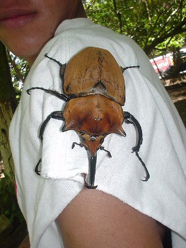
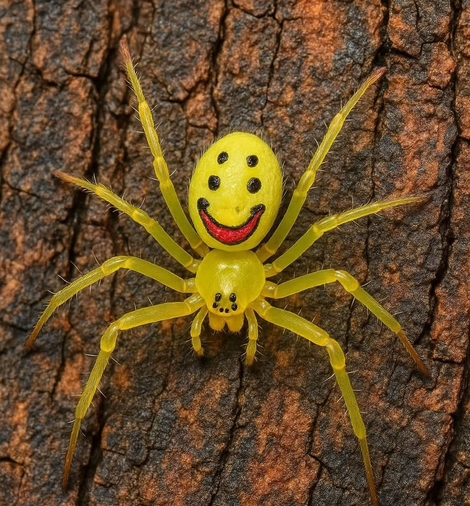
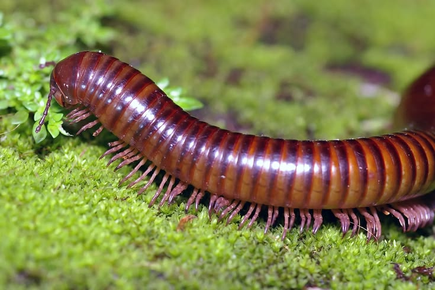

La Enciclopedia
— Guía visual de artrópodos —
Los artrópodos son animales con el cuerpo dividido en segmentos y patas articuladas. Son el grupo más numeroso del planeta: representan más del 80% de todas las especies animales conocidas.
Insectos
Clase Insecta · seis patas

Tienen tres pares de patas y, normalmente, alas y antenas. Su cuerpo se divide en cabeza, tórax y abdomen.
Escarabajos
El orden con más especies conocidas: más de 350.000 descritas.
Ciclo de vida
Pasan por una metamorfosis completa en cuatro etapas:
- Huevo
- Larva
- Pupa
- Adulto
Arácnidos
Clase Arachnida · ocho patas

Tienen ocho patas y no tienen antenas ni alas. Su cuerpo se divide en cefalotórax y abdomen.
- Arañas
- Araña lobo
- Araña saltadora
- Araña de jardín
- Escorpiones
- Ácaros y garrapatas
Miriópodos
Clase Myriapoda · muchas patas
Ciempiés y milpiés: cuerpo alargado con muchos pares de patas. Se esconden bajo piedras y troncos húmedos.

Comparativa
Rasgos principales
| Grupo | Rasgos | Ejemplo | |
|---|---|---|---|
| Patas | Antenas | ||
| Insectos | 6 | Sí | Libélula |
| Arácnidos | 8 | No | Araña lobo |
| Miriópodos | Muchas | Sí | Ciempiés |
| Datos orientativos: hay excepciones en cada grupo. | |||
Continúa en la página 2 →
— 1 —